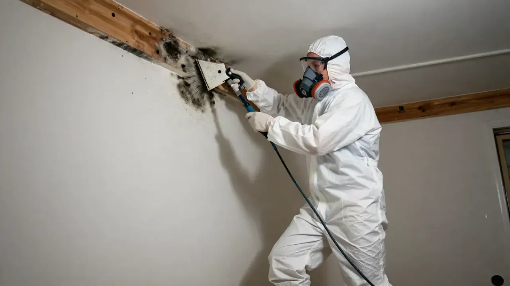

How to Get Rid of Mold on Walls
Finding dark spots or discolored patches on a wall can be frustrating, especially when they keep returning after cleaning. Mold can grow on wall surfaces when moisture remains, but the right way to address it depends on the material, the extent of growth, and the source of the moisture.

A small area on a suitable hard surface may be manageable with appropriate precautions. Mold affecting drywall, wallpaper, or other porous materials can require a different approach.
For homeowners in Evansville, Indiana, the first step is to understand why the wall became damp and whether the affected material can be cleaned or needs further attention.
1. Find Out Why the Wall Is Damp
Before cleaning visible mold, look for the source of moisture. Otherwise, the problem may return.
Common causes include:
- Leaking pipes inside or near a wall
- Roof leaks affecting ceilings or upper walls
- Water entering through exterior walls or the foundation
- Condensation on cold surfaces
- High indoor humidity
- Water damage that was not fully dried
Look for water stains, peeling paint, bubbling wallpaper, swollen baseboards, or recurring damp patches. These signs can indicate moisture damage, although they do not prove that mold is present.
If the wall is wet, soft, crumbling, or repeatedly discolored, consider getting the cause assessed before attempting repairs.
2. Decide Whether the Surface Is Suitable for Cleaning
The material affected makes a difference.
Painted or Other Hard Surfaces
A small amount of growth on a suitable, intact surface may be removable through careful cleaning. The cleaning method should be appropriate for the surface and the product instructions.
Avoid saturating walls with water, particularly if moisture could enter drywall or surrounding materials.
Drywall and Plasterboard
Drywall can absorb moisture, allowing damage or mold growth to extend beyond what is visible on the surface. If the material is swollen, soft, crumbling, or extensively affected, cleaning the surface alone may not be enough.
Further assessment may be needed to determine whether removal is appropriate.
Wallpaper
Mold may develop on wallpaper or the material behind it. Peeling wallpaper to investigate can disturb affected material and expose a larger area.
If growth appears extensive or moisture is trapped behind the covering, consider appropriate professional advice before removing it.
Wood and Baseboards
Wood may be cleanable in some situations, but the correct response depends on the material, the extent of growth, and whether the wood has sustained damage.
If baseboards are swollen or wall materials behind them are damp, investigate the moisture source rather than treating only the visible surface.
3. Take Appropriate Safety Precautions
Cleaning suspected mold can disturb particles and debris. Before starting, consider the size of the affected area, the condition of the materials, and whether the work could spread contamination.
For a small area that is suitable for cleaning:
- Keep children and pets away from the work area.
- Wear appropriate protective equipment, such as gloves and eye protection.
- Follow the cleaning product's instructions.
- Avoid dry brushing or sanding that could release dust and particles.
- Never mix cleaning products, especially bleach with ammonia or other cleaners.
- Stop if the material is damaged or the work appears likely to spread contamination.
People with asthma, mold allergies, or other health concerns may need to avoid cleaning suspected mold themselves.
For extensive growth, contaminated materials, or suspected mold inside wall cavities, seek appropriate professional advice.
4. Clean Suitable Surfaces Carefully
If the affected area is small and the material can be safely cleaned, use a method suitable for that surface.
For many intact hard surfaces, cleaning with detergent and water may be appropriate. Follow product directions and avoid using more liquid than necessary. Dry the surface thoroughly afterward.
Do not assume that stronger chemicals are always better. Bleach is not necessary for every mold cleanup, and it should never be mixed with other cleaning products.
Cleaning visible growth is only one part of addressing the problem. If moisture remains inside the wall, the mold may return.
The U.S. Environmental Protection Agency provides additional guidance in its Brief Guide to Mold, Moisture and Your Home.
5. Dry the Area and Correct the Moisture Source
Once a suitable surface has been cleaned, make sure it dries properly. The right approach depends on the material and the cause of the dampness.
Useful steps may include:
- Repairing plumbing or roof leaks
- Improving bathroom or kitchen ventilation
- Reducing excessive indoor humidity
- Addressing water intrusion through exterior walls
- Drying materials affected by a leak
- Replacing materials that cannot be adequately cleaned
The EPA recommends drying water-damaged areas and items within 24 to 48 hours when possible to help prevent mold growth. This is a practical target, not a guarantee that mold will not develop.
If the wall remains damp, simply repainting it may hide the warning signs without solving the underlying problem.
6. Avoid Painting Over Mold
Painting or applying a sealant over suspected mold is not a substitute for proper cleanup and moisture control.
The affected surface should be addressed appropriately, and the underlying cause of moisture should be corrected before repainting or refinishing.
If paint continues to bubble or discolor, or mold returns in the same place, investigate whether a leak, condensation, or damp material remains.
When Should You Get Professional Help?
Consider seeking appropriate professional advice if:
- Mold covers an extensive area or keeps returning.
- Drywall is soft, swollen, or crumbling.
- You suspect mold behind wallpaper or inside a wall cavity.
- The wall has been affected by a significant leak or water intrusion.
- You cannot identify the source of moisture.
- Cleaning could disturb substantial amounts of mold or debris.
The right response depends on the affected materials and the conditions at the property. An assessment may help identify visible growth, moisture damage, and possible sources of water intrusion.
Learn more about Mold Inspection if you need information about assessing a suspected problem.
Does Mold Testing Need to Be Done Before Cleaning?
Not always. Mold testing may be useful when sampling can answer a specific question, but it is not automatically necessary whenever visible mold is present.
The EPA explains that sampling is often unnecessary when visible mold is present and the affected area can be addressed appropriately. Testing also does not automatically identify the moisture source or show the full extent of hidden growth.
If a contractor recommends testing, ask what the samples are intended to establish and how the results may affect the work.
Read more about Mold Testing.
How Much Does Wall Mold Remediation Cost?
The cost depends on the size of the affected area, the wall material, accessibility, and the work needed to address the moisture source.
A quote may account for cleaning, containment, removal of damaged drywall, disposal, drying, and replacement materials. Plumbing, roofing, or other repairs may be priced separately.
Before approving work, request a written estimate that explains what is included, which materials may need removal, and what could cause the scope or price to change.
For more details, read our guide to Mold Remediation Cost.